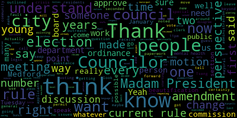
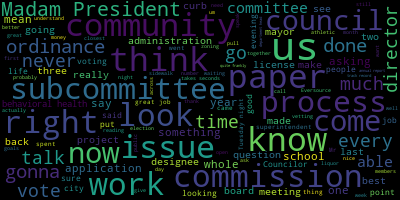
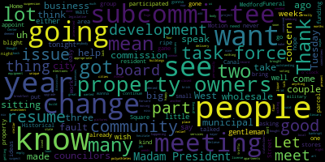
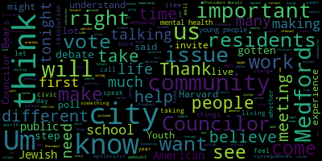
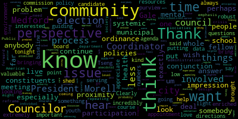
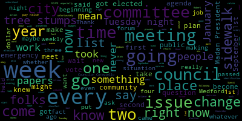

[Morell]: 19th regular meeting of the Medford City Council May 10 2022 is called to order Mr. Clerk, please call the roll.
[Hurtubise]: Vice President Bears. Council carabiniello. Council Collins. Council night. Councilor Kelly. Councilor Tseng, President. President.
[Morell]: President seven presidents are absent, please rise to salute the flag. Announcements, accolades, remembrances, reports, and records. Records, the records of the meeting of May 3rd, 2022 were passed to Councilor Caraviello. Councilor Caraviello, how did you find them? On the motion of Councilor Caraviello to table the records for May 3rd, seconded by Councilor Scarpelli. Mr. Clerk, please call the roll.
[Hurtubise]: Yes. Yes. Yes. Yes. Yes.
[Morell]: Yes. Seven in front of zero and the negative the records are tabled. On the motion of council and I just suspend the rules to take up public hearing second by second. Councilor Caraviello Mr. Clerk, please call the roll.
[Hurtubise]: Yes. Yes. Yes. Yes. Yes.
[Unidentified]: Yes.
[Morell]: Yes. I'm in the furnace during the negative. The motion passes hearings to two dash three one five legal notice city of Medford notice of a public hearing. The Medford city council will hold a public hearing in the Howard F Alden chambers at Medford city hall, 85 George P Hassett drive Medford and via zoom on Tuesday, May 10th. 2022 at 7 p.m. A link to be posted no later than Friday, May 6, 2022, on a petition from Crumble Cookies, Gopal Kumar Menon, 23 Revere Beach Parkway, Medford, Mass, 02155, for a special permit to amend its hours of operation in accordance with Medford Zoning Chapter 94, Section 94-145, to operate extended hours at its business at 23 Revere Beach Parkway, Medford, Mass, and site being located in a mixed-use zoning district as follows. Extended hours of operation requested 11 p.m. to 12 a.m. Fridays and Saturdays. Petition and plan may be seen in the office of the city clerk, room 103, Medford City Hall, Medford, Massachusetts. Call 781-393-2425 for any accommodations aides. TDD 781-393-2516. The city of Medford is an EOAA 504 employer. By order of the city council, sign Adam L. Hurtubise, city clerk. Advertise in the Medford transcript April 21st and 28th. At this time, as part of the public hearing, if we could have the petitioner provide an explanation of what they're seeking. If you could come up, Mr. Menon.
[SPEAKER_16]: Thank you. Yeah, so basically Friday and Saturday extended hours is what we're looking for. We do see a lot of customers coming in at that time, like at 11 o'clock. So we think it's a greater opportunity to serve the community, the cookies, and you know, it's the weekend and people love to have their cookies. So, and that's a model of crumble, so.
[Morell]: Thank you, Mr. Mann. We will now open the public hearing. Is there anyone here to speak in favor of the petition? That would be you.
[SPEAKER_16]: Oh, yes, absolutely, yes.
[Morell]: Is there anyone else who would like to speak in favor of the petition? Checking Zoom, okay.
[SPEAKER_05]: This portion of the public hearing is closed.
[Morell]: Is there anyone who would like to speak in opposition of the petition? Not seeing anyone on Zoom. This portion of the hearing is closed. Is there any discussion from the council?
[Bears]: Thank you, Madam President. Actually, I have no discussion on the particulars of the petition. I would just ask the clerk to coordinate with, I would guess the building department, or maybe this is all in the clerk's office, just to make sure that our legal notices have the updated sections and language for the new zoning ordinance going forward. Thank you.
[Morell]: Thank you. Councilor Knight.
[Knight]: Madam President, looking at this application is before us. There are a couple things that I'd like to point out. First of all, there was no place in the city of Medford at 11 o'clock at night we get a good cookie. So this is certainly a need that we have here in the community. Second, when you look at the application is before us, the gentleman's only asking for Fridays and Saturdays, it's only asking for one additional hour. You know, I think this is really. He's not asking for much. It's a brand new business, it's been very successful, a lot of talk about it. From what I understand, a state representative has already broken the record for the most crumbled points that you can get in a month or something like that. But in all seriousness, I think this is a good proposal that's before us here. I just ask that the license go with the business and not the address should it be approved. And I'd be happy to motion for approval of the papers before us this evening. Sure.
[Morell]: Thank you, Councilor Knights.
[Hurtubise]: Councilor Caraviello.
[Caraviello]: A couple of weeks ago, business was very brisk and I'm happy for the gentleman. You know, they made a huge investment in the place. A lot of the equipment is just all state of the art. I wish him well and I wish he should have brought some cookies tonight. Thank you. I thought about it. I didn't know if it was appropriate.
[Bears]: It was smart that you did not. And I respect that.
[Caraviello]: But I don't say he does only take out. So again, it shouldn't be an issue to anybody. And I think a lot of it is the delivery services too.
[Morell]: Thank you, Councilor Caraviello. So we have a motion from Councilor Knight. I do want to note that the newly adopted rules state that following a public hearing, a six calendar day public comment period shall commence. Public comments shall be submitted writing to the city clerk. The council shall neither approve nor deny any matter requiring public hearing until the conclusion of the public comment period, unless waived by a majority vote of the council. On the motion of Councilor Knight to waive the six day waiting requirement, seconded by Councilor Caraviello. So that would be the motion to waive and approve. Mr. Clerk, please call the roll.
[Hurtubise]: And the approval is with the condition that the permit go with the business now with the others, correct? Thank you. Vice President Bears. Yes. Councilor Caraviello. Yes. Councilor Collins. Yes. Councilor Knight. Yes. Councilor Scarpelli.
[Morell]: Yes.
[Hurtubise]: Councilor Tseng. Yes. President Morell.
[Morell]: Yes, seven in favor, zero in the negative. The motion passes and the extended hours are approved.
[Caraviello]: Thank you very much.
[Morell]: Congratulations.
[Caraviello]: Good job. See you soon. Madam President, while we're under suspension, if we could take two, two, three, four, eight, common pictures license.
[Morell]: All are under suspension. 22-348, petition for a common victor license by Barry Rafferty, 51 Crocker Road, Medford, for Mystic Dining, LLC, the Ford 61 Locust Street, Medford, Massachusetts, 02155. Mr. Rafferty, if you could tell us about the petition.
[Rafferty]: Good evening, and thank you for having me. The Ford's Tavern is located on 61 Lotus Street in Medford, and it's been something we've been working on for four years, and we're very close to opening it at this point. The licensing hours are 11am, I believe, or 10.30am until 1am. It's 120 seater restaurant bar. We have under our employment at this point, very close to 50 staff. So we've been considerable contributor to the local economy. We have our general manager Heath Landry behind me. We've got a very senior experienced team and we're looking forward to serving Medford community.
[Morell]: Thank you, Mr. Aberdey. Going to licensing chair, Councilor Scarpelli.
[Scarpelli]: I couldn't review it, so I apologize.
[Morell]: I don't believe any of us did receive the packet. I also did not receive the packet. Yeah, we didn't get the appropriate approval.
[SPEAKER_06]: I didn't get any approvals. Is it in the electronic version?
[Hurtubise]: That's different. It's on the electronic version.
[Scarpelli]: It sounds like it's going to be a great Italian restaurant.
[Rafferty]: But it won't be an Irish restaurant. It'll be an American restaurant. That's what I like to hear.
[Knight]: I have no problem voting for this.
[Scarpelli]: Me neither.
[Knight]: He answers one question. When is El Tecuba going to open? We've been waiting eight years for them. We're only waiting four for you.
[Bears]: I certainly don't have any any problem with the project I just don't want to, I just don't want to vote on it without having the paperwork reviewed. So, sorry about that Barry, we just like there's a little snafu with us getting the right paperwork to review. but I'll defer to Councilor Scarpelli.
[Scarpelli]: I mean, if we, if like, again, we've done this in the past with petitions that we could ask any questions that we normally ask and then revert back to if the clerk could send us so we could table it for one week and then vote. You don't have to be in next week, but we can vote on it.
[Morell]: I mean, is the paperwork downstairs?
[Scarpelli]: It's on the agenda, but it's not. It's on the agenda.
[Morell]: I just read something, so it's not on the agenda.
[Scarpelli]: It's 22-348, petition convict to license for Barry Rafferty, 51 Crocker Road.
[Bears]: It's right there.
[Scarpelli]: Page five. Yeah, so it's been advertised, but yeah.
[Hurtubise]: Yeah, I. Yeah. to move on to the next step.
[Caraviello]: I don't want to hesitate either. Believe me, I don't know if he's going to mix. If he's going to miss the meeting at the liquor commission. You know what that is?
[Knight]: I can't answer that either. We need your common fix license to go apply for the liquor commission to get your liquor license. Then you get your liquor license. Yeah.
[Rafferty]: Last year, we got a local 2021, it's going to be renewed next week. It was a change of the channel manager going through, so they don't have to come back before us for extended hours.
[Bears]: Yeah, you need a special permit from 11 to 1.
[Knight]: For 11 to 1, even if they lick the licenses to 1 AM at the state level, you have to come back to us for the extended hours permit. So if there's any opportunity for us to further vet this, it's going to be coming before us, I think. Right. I don't see this being harmful, but I would defer to the council. Or I'll make a motion to remove approval.
[Hurtubise]: I'll make a motion to remove approval.
[Scarpelli]: you know, the, the, uh, the proper paperwork be reviewed. Um, the next week's meeting, I know that, um, again, I, I can't approve anything. I don't have in front of me. So I don't know nothing. It's Mr. Raft. I want to move forward myself, but, um, common practices. We reviewed the paper, the documents, make sure that all the departments have signed off on it. And if, you know, if we can look back on, there was a a tequila restaurant that was supposed to open that didn't have paperwork that was signed. Hence, now we have a delay. So I just want to make sure that we have that paperwork documented. So I would move forward with it. And if you could send us the copy of the documents with all department heads clearing this, I would move forward with it.
[Morell]: I do see Victor Schrader on the call. I don't know if his hand up if he could offer anything to the conversation.
[Schrader]: Good evening, Councilors, Victor Schrader, economic development director for the city. We've been working closely with Barry throughout this process and appreciate you considering the common victual or this evening. Barry if I'm not correct here. You are hoping to open next week, is that right? We've been working hard to schedule an inspection with the health department. I've seen some of the paperwork. I just wanted to, in the interest of supporting this business, ask if there was any way that it could be produced this evening for the Councilors. and reviewed just to keep Perry on track. This is a significant investment, and I know he's been working hard, but if that's not possible, of course, we'll accommodate, but I just wanted to suggest that.
[Bears]: I have a motion for a 10-minute recess.
[Morell]: I have a motion for Senator Bears for a 10-minute recess. I'll take your 10.
[Morell]: second call the roll on the motion of vice president bears for 10 minute recess seconded by a Councilor Knight. I'm calling everyone in favor. I recess as the clerk tries to track down this paperwork so we can move forward on this tonight. Thank you for being with us.
[SPEAKER_05]: It's like, it's done inside. It's like done inside.
[Hurtubise]: Yeah. Is there a kitchen? Well, it's already in the kitchen. Mary. Yeah. Yeah. Yeah. Let's get them out of here. Let's go. Do you want a minute so you can read it? Yeah. Yeah. So you've recessed. Yeah. 735 ish.
[Hurtubise]: Bears and night to recess. Probably.
[Morell]: Yeah. And then we just voice voted, which maybe was illegal, but you weren't here to stop us.
[Tseng]: I'm not complaining.
[Hurtubise]: I think there's some people that want to review it. I just, I don't think you've, you haven't resumed from recess yet. You're fine. There's one. Yeah, but that's going to require a special permit, that part. It's on the bottom line, I think. Yes, yes, yes. Yeah, no.
[Morell]: On the motion of Councilor Caraviello to reconvene. Seconded by Councilor Scarpelli. Great.
[Hurtubise]: Meeting is resumed. Councilor Scarpelli.
[Scarpelli]: needed. We've looked at all the documentation. Everything is in order. Again, just the only thing is that the extended hours of operation is through special permit. So other than that, I find everything in order. And after my colleagues' questions, I would move approval.
[Bears]: Yeah, I would just add specifically those that you can stay up until 11pm right now and then 11pm to 1am would be what the special permit would require. So, I already seconded it. Yeah.
[Morell]: Any further discussion on that motion of Councilor Scarpelli, seconded by Councilor Caraviello. Mr. Clerk, please call the roll.
[Hurtubise]: Councilor Bears? Yes. Vice President Bears? Yes. Councilor Caraviello?
[Morell]: Yes.
[Hurtubise]: Councilor Collins? Yes. Councilor Knight? Yes. Councilor Scarpelli? Yes. Yes. President Morell.
[Morell]: Yes, seven in front of zero in the negative the motion passes.
[Hurtubise]: Good luck. President Morell. Last week.
[Morell]: Vacations from the mayor April 22 2022 to the Honorable President and members of the Metro City Council. Dear President Morell and members of the City Council, I respectfully request and recommend that your Honorable body confirm the appointment of Rebecca Amami, Democrat of 12 Ship Ave, Apartment 7 to the Election Commission for a term to expire March 30th, 2026. A copy of the appointment letter is attached. Thank you for your kind attention to this matter. Sincerely, Breanna Lungo-Koehn Mayor. And then be a first class mail to Rebecca mommy's fellowship of apartment seven Metro dear Rebecca, thank you for your interest in serving on a border commission with the city of Medford I'm pleased to appoint you to a term to the Metro board of election commissioners which expires on March 30 2026. Please take the enclosed appointment letter to the office of the city clerk to be sworn in at your earliest convenience. Thank you for your continued commitment and dedication to the city of Medford. Sincerely, Breanna Lungo-Koehn, Mayor, City of Medford. I just want to note that in the time since this was first tabled, we did get a requested resume circulated to the council for Ms. Amami. Any discussion from the council?
[Scarpelli]: If I can.
[Morell]: Councilor Scarpelli.
[Scarpelli]: I know that as we looked at other, the only question that I had that was brought to my attention was the voting record for municipal elections. Is that something that's weighed as we, as the mayor processes? Cause I know that that wasn't a concern with other applicants. So that's, I know that they shared her voting history and obviously she's a strong supporter of the four year elections, but in the two year elections, and this is, a very important piece of our process here at Medford. So if we can get some.
[Gale]: Madam President, thank you. Currently, the only stipulation for being on the election commission is a two-year look back for what your party affiliation is. Your voting history does not come into that. She was given a thorough look back for the last 13 years. She has been in the same party for that time period.
[Scarpelli]: I only say that because it was shared, so.
[Morell]: Thank you, Senator. Thank you. Any further discussion? Councilor Favrella.
[Caraviello]: Their resume is a stellar resume, but I'm a little concerned that she hasn't participated in the local municipal elections also. For us, this is what we do. We're the municipal body. And that's a concern of mine that in all the cities that she's lived in, she's never participated in the municipal part. So that's a concern I have. I don't know her personally and her resume. It's an outstanding resume, but the voting record is a little suspect to me.
[Morell]: Thank you, Councilor Caraviello. Councilor Collins.
[Collins]: Thank you, President Morell, and I appreciate the questions that my fellow Councilors have brought up so far. Since we have our election coordinator here, I'm interested to hear from Coordinator Gale on her perspective on the appointment. I think that the election commission is going to be under her purview, so that's kind of a perspective that I think is valuable here. I do want to say, Clearly, robust participation in municipal elections is extremely important for somebody who can be serving on a board where that is the whole point. You know, we live in an environment where participation in municipal elections is at a baseline, incredibly low. So I think that there's perhaps something to be said about this candidate bringing a perspective that could help us to, you know, look at that problem and perhaps, you know, bring the perspective of somebody who's been less involved and looking to get more involved and shed some light on that. But, you know, we'd love to hear from Coordinator Gale on this. Thank you.
[Gale]: Thank you. Madam President, thank you for bringing this forward, Councilor Collins. Community involvement or being involved with the necessary functions of a commissioner, it is a time commitment. With that being said, that doesn't mean that Ms. Imani won't be involved in those commitments. I have not spoken to her personally, but there are commitments that we make in the community that we have to show up for and do. The commissioners are responsible for all registration drives. We did have a registration drive at the high school last Friday. Commissioner Milron and myself were there and we got 52 new registrations from Medford High School students. So that was a very good success. We started with the education program last night out at West Medford Community College. We had a good turnout with the commissioners there as well. So there are things that do happen that the commissioners are going to have to commit their time to. It is, especially going into state election season, there are a lot of things. I was reviewing the calendar with a colleague earlier this week and we were looking at the amount of days that we have to stay open till five o'clock to meet deadlines. These things happen on Fridays, they happen on Tuesdays, they happen all days of the week. So it is a commitment and the commissioners are required to be at early voting, which we know we're going to have seven days of early voting for the primary election prior to September 6th. And at least between 10 and 12 days, for the general on November the 8th. So their responsibility is to participate in those. That doesn't mean that they can't rotate the schedule. They all four do not have to be there at the same time, but they also handle things like the provisional ballots. They're required to be at a monthly meeting so that we can make the appropriate plans I'd like to see the voter turnout in next year's municipal election be up around the 50% level. And I think if it's driven home hard enough and we can get the word out that your voice is loudest in your own backyard, I believe we can reach that 50% goal. So that's the jest of a commissioner. It is a time commitment. And I will agree, Ms. Imani has a stellar resume. It is absolutely phenomenal as far as the resume goes.
[Morell]: Thank you, Coordinator Gale. Any further discussion?
[Bears]: I would just add to the point of Councilor Collins, you know, 60 to 70% of residents don't vote in the municipal elections. And, you know, I think having the perspective of someone who, you know, from the records that we got has moved around quite a bit, but has now decided to, as far as I can tell, purchase and settle here, submit an application, requesting to be on boards and commissions, you know, now planting those roots now, someone who wants to be more involved, that that perspective could aid the elections department. in that outreach and in that work to raise turnout in our local elections. So I think that perspective would be valued and I would move to approve.
[Morell]: Thank you, Vice President Bears. Councilor Saik.
[Tseng]: I understand the concerns, but I think I'm of a similar mind when it comes to this issue as my colleagues, Councilor Collins and Councilor Bears. I think it's important that our boards and commissions look at like our community and know, unfortunately, it is a fact that our, you know, the majority of our community doesn't vote in municipal elections. And it's important to get the answer why. And it's important to see why people who maybe moved to Medford in the last 10 years, maybe why, just to see why they haven't why turnout might not be as high, right, with that specific subset. Or why, you know, why turnout isn't as high in general with anyone who lives in Medford but is registered to vote here. I think it's important to have that perspective. I think it'll make our city stronger in this case. And, you know, it's my hope that we have more residents like, um, like the candidate that we're talking about tonight where, you know, they've decided to put down roots in our city and they've decided to sign up to participate more deeply and engage more deeply with our civic life. Um, and I think in order to have, um, residents like that, we need models, um, and we need to support those models when they, when they try to engage with our democratic process. And so, um, I'm okay with appointing with convert with voting to confirm this appointment tonight, because I think it's important to show those who want to get more involved in our city's politics and cities affairs that they'll be supported when they try to do so.
[Morell]: Thank you. Further discussion.
[Knight]: Madam President, I think it was my father that told me this a long time ago 90% of life is showing up. I mean, how can we put somebody in the election commission as a vote? It's crazy. So it's pretty much, I never did this before, but now I want to do it. So put me on a commission and we have a line of people that have participated every day that want to be vocal members of our community and vocal members of boards and commissions that get bypassed. I don't think she's a good candidate just based upon the fact that she's seeking a job on the election commission and doesn't vote locally. And it's a local appointment to a local board. It doesn't make sense to me. Doesn't make sense to me. I mean, I'm sure that she's a great person. I Councilor Tseng said that, you know, the people in our boards of commission should look like the people live in our community. I don't know what this mommy looks like because I've never seen her before. Since this application has come in, I've never seen or heard from her. I've never gotten asked if I have any questions about her. She's never reached out to me and said, I'd like your vote. Do you have any concerns or questions? I've never got any of that. which is normal practice when you have an applicant that comes before this board, they usually reach out to you and ask for your vote, and they ask if they have any questions or concerns before this type of event happens. So I, as one Councilor, can't support this. Like I said, 90% of life is showing up. It takes 30 seconds to vote. It takes 30 seconds to vote. How can you go from not voting to saying, I want to be an elections commissioner? It takes 30 seconds to do it.
[Morell]: Thank you, Councilor Knight. Any further discussion?
[Scarpelli]: Madam President.
[Morell]: Councilor Scarpelli, then Vice-President Rhoads.
[Scarpelli]: Thank you again. Again, I want to reiterate, I appreciate that somebody new to our community wants to get involved. I appreciate that. There are multiple. positions that are open right now that would probably be a better fit considering she does have a stellar resume. I think she's a very talented individual and someone that could really provide a benefit to the city. But like I said earlier, we were given the, to be honest with you, I wouldn't, I saw her voting record and Councilor Knight hit the nail on the head. We're actually voting for a commissioner and it's nice that people want to do it, but it's a commissioner that's never voted in a two year election. So I can't see how we can support it legitimately. So thank you.
[Bears]: I just think by the logic that was just outlined, 65% of the city is excluded from being on the, you know, that 35% of the city should get priority to be on boards and commissions and 65% should be second fiddle. And I don't think that's a fair logic. And I understand, I understand it. I understand the position. You know, we want people who voted in every election. We want people who have gone above and beyond, you know, voting in every election. And that's one perspective. Most people don't do that in this city. And I think we have to question why. And I think that having someone with the perspective who understands the answer to the question why could help us change that reality that we've had for a very long time, even in the most contentious elections in the past few years, 34%. That's better than 25% or 20%, which we were getting 10 years ago. Sure. But again, we didn't receive the voting histories for any other appointments we made here. I'm just going to leave it and to Councilor Knight's point about being properly educated as to the process of applying, you know, being an applicant to a board or commission and working with confirmation of the council. I think we're well aware. I haven't, I didn't receive a call from, I haven't received a call, I don't think in two years, except for maybe one exception from a mayoral appointee who needed to be confirmed by this council. And is that the fault of the applicant or a fault of the appointing authority? I'll leave it at that. Thank you.
[Knight]: Madam President, voting is your voice, but voting also shows that you're invested in the community that you live in.
[Morell]: Thank you, Councilor Knight. Any further discussion? On the motion of Vice President, Councilor Tseng.
[Tseng]: President Marlowe.
[Morell]: Go ahead.
[Tseng]: Could I?
[Morell]: Go ahead, Councilor Tseng.
[Tseng]: Thank you. I want to clarify that when I said that our applicants should look like our community, it's, you know, when I say things like that, it's not just racial, it's everything, right? It's about your life experience and whether it matches the experiences of the people who live on the ground here. And if we're, I agree with Councilor Bears, if we're excluding 65% of our population from being considered equal participants in our civic processes, I think that logic is faulty. I think it's important to understand that voting, you know, while I think for a lot of people does take 30 seconds for, for many people takes a lot of planning as to, you know, whether to leave a workplace, right. To take a day off of work, whether you need to.
[Knight]: I'm president. I understand this because I have a job. I have two kids. I have actually three jobs and two kids, but I still go out and vote.
[Tseng]: Thank you. Councilor. I vote too. Right. And I, I'm a student, I spend the whole day on campus on Tuesdays, right? On election days, taking classes and doing work and doing meetings, right? But everyone's situation is different. And I think it's too much for us to make an assumption about the difficulties that someone might encounter when it comes to making a vote. So I think it's just, we shouldn't speculate too much on that.
[Morell]: Thank you, Councilor Sai. On the motion of vice president bear seconded by second Councilor Collins, Mr. Clerk, please call the roll.
[Hurtubise]: Vice President Bears. Yes. No. Yes. Yes.
[Morell]: Yes, four in the affirmative, three in the negative, the motion passes.
[Bears]: Well, we're under suspension, Madam President, motion to take 22-349 and 22-350.
[Tseng]: Madam President, I have a guest who wants to speak on 22, who's behind the poll for 22-350.
[Morell]: Yeah, I did have Councilor, I apologize, Vice Mayor Barrett, Councilor Tseng did send us a chat, just because he's delayed, Paper 22-350. Sorry, 22-350. Is that what you asked for? Yes. Okay, so 349 and 239. Okay, so we will take them in order.
[Tseng]: Thank you. The lag is making things confusing.
[Morell]: I know, I'm... Okay, so you want 22349 and 239? 22-349 offered by Councilor Caraviello. Be it resolved that the mayor appoint a task force to examine future development in West Medford Square. Councilor Caraviello.
[Caraviello]: Thank you, Madam President. For those of you who were present at the West Medford Community Center legislative breakfast a couple of weeks ago, this is one of the concerns that they had down there was the lack of anything happening in West Medford Square. Being resident of that area, part of the part of the fault of what's going on down there was just really nothing is our fault, the city's fault. You know, we had a, we had a project that was that wanted to get done on Canal Street, and the gentleman needed some relief to put in some apartments back there a few years ago, and he was denied. We have Sincari Funeral Home that closed up. People bought it. Historical Commission deemed it historical, so made them wait 18 months. The group has now gone bankrupt. These are polyathletes and that's been sitting there for three years in blight. And you've got stores down there in blight because again, there's no people down there. West Webbing Square is kind of unique because it has areas that can do some small development. Like I said, we've got that funeral home that's been sitting there for three years, just growing weeds. You got two parcels on Canal Street. that are ripe for a small development. You've got a parcel on Harvard Avenue, ripe for development, and you've got some buildings there that can maybe add another floor or two. So I'm asking the mayor to appoint a task force, but I want the task force to be the property owners, the stakeholders in the game. You know, what we do in this community is we appoint these committees and these commissions, and they all go out with these great ideas for other people's property, and we never go out and talk to the property owners. I want this task force to be the property owners. Let's see what we can do for them. What is it going to take them to upgrade their property? What kind of development? How can we help them get funding? So again, this is an easy, it's an easy task force they can build. I've already talked to some of the property owners down there that they're interested in getting on board. So if they make it, do that. But I say, I'm asking that the task force be with the property owners and get them on board. Let's see what we can do and get that part of the town moving. Let's get rid of those empty stores there. and bring some people down there and bring business down there. Again, businesses want to come where there's people and there's no people, there's no walking traffic down there. So, I'll wait for any of my other councilors to have any discussion on that.
[Morell]: Thank you, Councilor Caraviello. Any further discussion?
[Caraviello]: Motion approved.
[Morell]: I do, so is the hope that they would work, because there's the West Medford, there's the business association as well.
[Caraviello]: Is it the hope that they would work with them or this would be something- Well, the business association, but the property owners, the people who have stake in the game. Let's get them on board here, see what they want to do, see what help they want to do. And if the city, and I talked to Victor today about this, if our group, if our board can help them either get funding or give them some ideas of what to do.
[Morell]: Thank you, Councilor Caraviello. So on the motion of Councilor Caraviello, second by- Second. Councilor Bears. Mr. Clerk, please call the roll.
[Hurtubise]: Vice-President Bears. Yes. Councilor Caraviello. Yes. Councilor Collins. Yes. Councilor Knight. Yes. Councilor Scarpelli. Yes. Councilor Tseng. Yes. President Morell.
[Morell]: Yes. The motion passes. 22-350 offered by Councilor Tseng, whereas the 2022 spring edition of the Harvard youth poll found that nearly half, 45% of LGBTQ youth feel under attack a lot because of their sexual orientation. Whereas approximately three fifths, 59% of young black Americans, 43% of AAPI youth and 37% of Hispanics believe people of their racial background are under a lot of attack in America. Whereas a majority of young Americans between the ages of 18 and 29 52% report feelings of depression or hopelessness and 24% report thoughts of self harm, a feeling particularly prevalent in young Americans who are black 35% API 33% female 26% LGBTQ 39%, and in a bad financial position 35%. And whereas the Surgeon General has issued an advisory which calls for a swift and coordinated response to this mental health crisis as the nation continues to battle the COVID-19 pandemic, be it resolved that the City Council ask the City Administration and School Department to study youth mental health in Medford and to prepare an action plan to address the mental health epidemic, both for children within the Medford public school system and youth living in Medford more generally. and be it also resolved that the Subcommittee on Public Health and Community Safety invite relevant city officials, experts on youth mental health and Medford's youth leaders to discuss steps the city can take to address challenges to our youth population and mental health. Councilor Tseng.
[Tseng]: Thank you, President Morell. This agenda item was inspired by the Harvard Youth Poll, which just came out a few weeks ago. I will let I believe the chair of the Harvard Youth Poll is on the Zoom call tonight, so I will let him talk a little bit about the poll itself and how they came to these questions and conclusions. But these results very much line up with my experience talking to young people living in Medford, both those in our school system and those who graduated and are just, you know, young residents of our city. We live in a difficult time today, of course, with problems exacerbated by COVID, by inflation, by economic worries that cause young people to face more mental health challenges now than they have in years past. And a lot of the Um, attempts to resolve this have not been successful. I want to see, I want to make sure that our city is moving forward on these items is, uh, is making sure that all of our residents feel included and involved in our city. Um, and to, to let, um, our young people here have people that they can turn to. Um, and places that they can turn to, um, to help them, uh, to help them grow and to help them thrive in terms of living in the city. Um, Medford is a city that's younger than the county average than the state average. And so these results, I think, have tremendous implications for us. Just walking through the resolution itself, I included the first part of the resolution, which asks the city administration and the public school system to study youth mental health in our city, because I believe that, you know, every city is different. Every municipality is different. And for us to tackle Medford's problems, we will also need to know what is going on in our city better. I've actually had school committee members reach out to me and want to cooperate on this issue. And so I'm optimistic that we can make progress on these issues going forward. The second part of the resolution is asking our public health and community safety commission to meet and to invite relevant city officials, to invite experts, to invite youth leaders, to invite those working at Tufts and Harvard who have been studying this issue for a very long time, to help us as a city council see what is actionable and what what are the steps that our city can take when it comes to those, especially when it comes to those young residents who fall outside of the public schools purview. I'm thinking especially of our residents who are from the ages of 18 to 29, and to see what are some basic steps that our city can take to improve the mental health of young people living here. And this itself will lead to both a more prosperous and more thriving community, but also safer community as well, where we're openly discussing mental health and openly discussing things that will make our streets in our city safer. I'll finish my comments there. I believe after any Councilors want to say anything, the chair of the Harvard Public Union Project is with us tonight.
[Morell]: Thank you, Councilor Tseng. Any discussion from the council before we hear Vice President Bears?
[Bears]: Thank you, Madam President. I just wanna say thank you to Councilor Tseng for putting this forward. I think we all know, well, number one, A, I technically count as a young person by this definition, so I appreciate that. But I think we all know people who are in our community here in Medford, young people who have lost their life too early. because of mental health crisis or substance use disorder stemming from mental health crisis. I think one of the It's just, it's really tough. I have someone I know very closely who just entered a 30 day program, young person, successful college graduate, still just really struggling through these issues. And I think it's just essential that we do everything we can. I think the great work of our prevention and outreach team and in partnership with so many city departments and folks has done a lot of work, especially relative to the substance use, piece of this. But as has been noted, COVID and economic crises and whatever else it may be really have exacerbated general mental health issues for young people. And whatever we can do as a city, as a mayoral administration, city council, Medford public schools, and just a community in general and all of the private agencies and Organizations like the universities, whatever we can come together and do to keep people safe, to keep people in, make sure people can access the care that they need and deserve is something we should do. So I strongly support the efforts of this council, Councilor Tseng, and our city to look out for one another when it comes to this. Thank you.
[Morell]: Thank you, Vice President Bears. Councilor Collins.
[Collins]: Thank you, President Morell and I want to thank Councilor Tseng for putting this on the agenda tonight. I think we're, this council is, you know, enriched by his proximity to the youth community here in Medford and it's always by his proximity to the data, the numbers, because of course, you know, this systemic look at the issue, you know, is exactly what should be guiding our resources as a city, our policy directions as a city, and, you know, I think that the city administration in conjunction, put emphasis on, you know, in conjunction with the school department is exactly who I'd like to hear from on this issue from those involved with the Medford Public Schools community and see how we might design policies um to go forward from here you know I think it it doesn't need repeating but I think especially with the issue of mental health mental health crisis which I think over time you know our society like all American societies is coming to reframe it's an issue that has been for a very long time individualized it's been atomized it's been made to feel like people have to deal with this on a very individual level but I think um probably all of our lived and anecdotal experience reveals that this is a systemic community wide problem. And, you know, that's how we have to be addressing it if we want to be taking care of our whole community. So thank you.
[Morell]: Thank you, Councilor Collins. Any further discussion from the Council? Councilor Naik.
[Knight]: Madam President, thank you very much. I agree with all my colleagues, and I think that's why last term, this council voted to pass the ordinance to promote prevent and support behavioral health and establish a commission to do all these things that this ordinance before this proposal before us this evening is asking for. If we look at that ordinance that was passed on three to 21 and established a series of goals. One of those goals was to set community wide goals to create a strategic plan achieving mental well being for all of that residents, and I think that that's really what speaks with this paper speaks to this evening. Also, we look at the composition of this commission will see that it has the director of the Board of Health, the police chief or his designee the fire chief or his designee superintendent of schools or a designee, the manager of prevention and outreach the director of diversity, The director of the senior center the director of veterans services or a designee designees from our EMS provider, the director of school counseling and behavioral health behavioral health specialist from Tufts, a behavioral health health specialist from Lawrence Mural Hospital, and three community members appointed by the map. So it's clear, Madam President, when this paper first came out. We as a body made sure that there was more of a focus on the students in our schools and the young people in this community. If you remember what the first paper looked like when Mayor Burke put the paper out, Madam President, I did a little bit of work. And through the subcommittee and committee process, actually, we were able to meet on a number of occasions and really hash out the details in this paper. And we came up with a nice document here. And quite frankly, if you're looking for what Councilor Tseng's asking for, And what this ordinance calls for, it's the same thing. And where this matter passed on 3-2-21, and the commission is required to file an annual report with the mayor and the city clerk, it looks like probably within the next 60 days, we should be seeing what their annual report says. So that's something I'm looking forward to. I'd just like to amend the paper and add that as a request that the administration provide us with a copy of the behavioral health commission's annual report, whereas the commission has been up and running now for a period of about 14, 15 months.
[Morell]: Thank you, Councilor. Any further discussion? I saw Alan Zhang on the call. Do you want to speak? I'll unmute you and just name and address for the record, please.
[SPEAKER_00]: Sure. My name is Alan Zhang. You can have my address as 58 Plimpton Street in Cambridge, Massachusetts, 02138. I am a sophomore at Harvard, and I'm serving as the chair of the Harvard Public Opinion Project. And I'm just here to briefly give some more context on the numbers mentioned in the resolution. First of all, I want to say, Councilors, thank you for your time. I do think that this is a pressing issue facing tens of millions of young Americans across the nation, but what we also see is this is really an issue at the local level. This is an issue that affects our schools, affects our local communities, affects those around us, our friends, our parents, our children. And what we're finding with these numbers, both in our focus groups and in our national poll, which is referenced in the resolution, is that we have a crisis that is going on. And this crisis, we first started looking at these numbers around this time last year, and the numbers have stayed consistently high. At the national level, we see more than half of young Americans are consistently having thoughts of being depressed, being hopeless, and roughly a quarter of young Americans have thoughts of self-harm. and thoughts of hurting themselves and being better off dead. These numbers are strikingly consistent across demographic lines. These numbers are strikingly consistent across geographic lines, too. I have no doubt that these numbers are just as true in Massachusetts and Medford. But what I want to point out is a lot of young Americans are looking for support, and they're looking for just a sign from their elected officials. They're looking for a sign from those in power, from those who have the power to make decisions, that they're actually looking out for them. The Surgeon General declared this a crisis, issued a special statement. And I mean, I have to concur with that. Based on our conversations that based on our research. It is something that we believe should be acted on, and it's something that we believe should be a priority.
[Morell]: Thank you, Mr. saying any further discussion on the motion of Councilor Tseng seconded by Councilor Collins. Mr. Clerk, please call the role as amended, as amended. Yes.
[Hurtubise]: Vice President Bears? Yes. Councilor Caraviello. Councilor Collins. Yes. Councilor Knight. Councilor Scarpelli. Yes. Councilor Tseng. Yes. President Morell.
[Morell]: Yes. Six in the affirmative one absentee motion passes.
[Bears]: Madam President motion to revert to the regular order of business.
[Morell]: On the motion of Vice President Bears to revert to the regular order of business. Second by Councilor Caraviello. Mr. Clerk, please call the roll.
[Hurtubise]: Vice President Bears. Yes. Council caribou. Yes, that's a Collins.
[Collins]: Yes.
[Hurtubise]: That's a night is temporarily absent.
[Morell]: Yes, six in the affirmative one absent the motion passes reports of committees to 0-006 May 3rd 2022 subcommittee on ordinances and rules report to follow. Vice President Bears is the chair of that subcommittee.
[Bears]: Thank you, Madam President. This was a meeting regarding the beautification ordinance. We made a number of changes proposed beautification ordinance, we made a number of changes, it would create a beautification committee to focus on curb appeal around the city. We made a bunch of changes and then we reported it out to committee of the whole for further discussion, move to approve the report on the motion of our system bears to approve seconded by Councilor carby Oh, Mr.
[Hurtubise]: Vice President Bears. Yes. Yes. Yes. Yes. Yes. Yes.
[Morell]: Yes, seven in front of the negative motion passes announcement accolades and remembrances to two dash three four or five offered by Councilor Caraviello be it resolved that the Medford city council recognize may as national national military appreciation month. Please recognize and honor all 2.2 million United States service members and their spouses Councilor Caraviello.
[Caraviello]: Thank you, Madam President, as I think the motion speaks for itself and we've had a distinguished history of our military in your. The reason we sit in this room and we're allowed to voice our opinions is because of the military, many of them who gave the ultimate sacrifice so we're able to speak and speak freely in America. So again, I just wanna honor the men and women who have served and their spouses and significant others.
[Morell]: Thank you, Councilor Caraviello. Any further discussion? On the motion of Councilor Caraviello, seconded by Councilor Knight, Mr. Clerk, please call roll.
[Hurtubise]: Vice President Bears. Yes. Yes. Yes. Yes. Yes. Yes. Yes. Yes. Yes. Yes. Yes. Yes. Yes. Yes. Yes. Yes. Yes. Yes. Yes. Yes. Yes. Yes. Yes. Yes. Yes. Yes. Yes.
[Morell]: Yes. Yes. Yes. Yes. Yes. Yes. Yes.
[Tseng]: Thank you, President Morell. This is pretty self-explanatory, but Medford is home to a sizable Jewish community, Jewish American community. We, of course, have Temple Shalom, but we have many Jewish Americans who call Medford home, even outside of that congregation. And I thought it was important to make them feel seen. I've gotten, throughout the campaign and while I've been in office, have gotten calls about issues relevant to, you know, Jewish Americans, Jewish Methodians being, feeling seen in our community. I'm talking about incidents at schools and on the streets where perhaps we could do more to address these issues. And I think this is important first step for us and a positive first step too, in the name of celebration.
[Morell]: Thank you, Councilor Tseng. Any further discussion? On the motion of Councilor Tseng, seconded by Councilor Caraviello. Mr. Clerk, please call the roll.
[Hurtubise]: Vice President Bears? Yes. Councilor Caraviello? Yes. Councilor Collins? Yes. Councilor Knight? Yes. Councilor Scarpelli? Yes. Councilor Tseng? Yes. President Morell? Yes.
[Morell]: Yes, you're in the negative the motion passes to two dash 347 offered by Councilor Tseng be it resolved that the city council recognize Asian American and Pacific Islander heritage month.
[Tseng]: Councilor Tseng, Thank you, President Morell, this is another short and simple one. Again, Medford is home to a very large Asian American community. This is a month, again, to celebrate the heritage and the contributions of Asian Americans to our society, including two Medfords. um, life here, civic life here. Um, and again, making people feel seen is a is an important first step to making sure our community is inclusive as is as inclusive as possible.
[Morell]: Thank you, Councilor Tseng any further discussion on the motion of Councilor Tseng seconded by Councilor Caraviello. Mr. Clerk, please call the roll.
[Hurtubise]: Vice President Bears. Yes, that's a Caribbean. Yes, that's a Collins. Yes, that's a night. Yes, that's a script Kelly. Yes, that's a saying, Yes, President Morell.
[Morell]: Yes, I'm the furnace during the negative the motion passes petitions presentations and similar papers to to dash 339 petition for grant of location National Grid North and over Massachusetts relocation of utility pole jointly on with Verizon New England, Medford, Massachusetts. City Clerk's Office. You are hereby notified by order of the Medford City Council. The Medford City Council will hold a public hearing in the Howard F. Alden Chambers at Medford City Hall, 85 George P. Hassett Drive, Medford, and via Zoom on Tuesday, May 10, 2022, 7 p.m. A link to be posted no later than Friday, May 6, on a joint petition of Massachusetts Electrical Company doing business as National Grid and Verizon New England for permission to locate poles, wires, and fixtures, including the necessary sustaining and protecting fixtures. along and across the following public way or ways here and after name said poles, wires, or fixtures to be located substantially in accordance with the plan number 30453109 marked Winthrop Street, Medford, Massachusetts, dated November 23rd, 2021, and received and filed in the office of the city clerk on December 21st, 2021. Wherefore it prays that after due notice and hearing as provided by law, It be granted a location for and permission to erect and maintain poles and wires together with such sustaining and protecting fixtures, as it may find necessary said polls to be erected substantially in accordance with the plan number 30453109 Mark Winthrop Street, Medford, Massachusetts and available for inspection in the office of city clerk Medford City Hall room 10385 George Peabody Passage Drive. Medford Massachusetts, also for permission to lay and maintain underground laterals cables and wires in the above or intersecting public ways for the purpose of making connections with such poles and buildings as each upset petitioners may desire for distributing purposes. Petitioner agrees to reserve space for one cross arm at a suitable point on each of said poles for the fire police telephone and telegraph signal wires belonging to the municipality and used by it exclusively for municipal purposes. The following are the streets and highways referred to. Plan number 30453109 Winthrop Street National Grid to relocate one J.O. pole on Winthrop Street beginning at a point approximately 20 feet northeast of the center line of the intersection of Winthrop Street and Lorain Road. and continuing approximately 15 feet in northwest direction. Relocate one pole P279 approximately 15 feet northwest from existing location to accommodate new driveway 2541 Winthrop Street. Location approximately as shown on plan filed in the office of the city clerk. The engineering division recommends that this grant of location be approved with the following conditions. The grant of location is limited to the relocation of one joint owned pole at the underground services associated with the full relocation. Two, before starting work, the contractor shall notify dig safe and shall obtain all applicable permits from the engineering division. The project must obtain a street opening permit pursuant to section 74-141 of the city ordinances prior to commencing work. Number three, no other utility structures, conduits, duct banks, pipes, or any other appurtenances are adversely impacted. The proponent shall ensure that all sewer, water, and drain lines remark prior to any excavation number for the final poll location shall be coordinated with Mary Kenny with the Mary Kenny way development so it will not adverse the impact traffic sight lines number five the sidewalk restoration shall be done in coordination with the Mary Kenny way subdivision project and per the requirements of an approved street opening permit. At a minimum, the restoration shall include new concrete sidewalk panels replaced in kind with an expansion joint placed around the pole. The project site must be swept daily and shall be kept free of debris from the duration of the installation. Approved, Superintendent of Wires. Call 781-393-2425 for accommodations and aid. Signed, Adam Hervey, City Clerk. Plans can be viewed in the City Clerk's office. 71-393-2425. Do we have the petitioner on the line? Do we have the petitioner on the line for the grant location? If you're on the phone, you should get notification to unmute if you are in person or if you're on video, please raise your hand. Just seeing if we have the petitioner on the line to speak to this. I did see a gentleman on the call earlier that also dropped that may have been the person.
[SPEAKER_11]: Yeah, that's my thought too. Nope.
[Knight]: President for me.
[SPEAKER_11]: Council night.
[Knight]: This application is before us is endorsed by our superintendent lines, who in my opinion is probably one of the best department heads that we have here in City Hall. Mr. Randazzo does an excellent job. He's done a great job with his budget. He's been able to cut his budget by about $400,000 when we transferred two LED lights and took over the maintenance of our streetlights. He's quite a department head and he's laid out a pretty nice plan there from what I can see in the application that's before us. You know, when we look at this stretch of area, for probably the better part of the last five years, the residents in this neighborhood, and I know you wouldn't know anything about this, Madam President, at all, have had to deal with the Eversource project and have had to deal with the blasting project for quite a bit of time. The conditions of the Eversource project call for significant restorations and sidewalk installation at Lorraine Road and Winthrop Street, as well as curb-to-curb paving for the whole stretch of Winthrop Street. Coordination of these projects is key in order for us to make sure that when we get curb-to-curb paving, five days later, we don't have an application for someone to have a granite location for a ground opening to come in and say we need to go and lay these telephone wires down now. So I think it's in our best interest to conditionally approve this paper right now so that the city engineer's office can coordinate with Eversource because, you know, it's only been like half a decade. So this project should be almost done, you know, maybe before, you know, 2029 or so. But ultimately, you know, in placing my trust in the department head that we have here, Mr. Medazzo, and also looking at the circumstances that are before us and the damage that could be done should this grant location not be offered, I think a conditional permit is warranted at this point.
[Morell]: Any further discussion on the motion?
[Scarpelli]: President, maybe we lost the petitioner, but I just find it, I find it bothersome that again, utilities, we seem to have the biggest issues with utilities. And they're not here to represent on this petition. So I do understand Council nights. Support of Mr. Randazzo is probably one of the best in the city. I think that I would say I trust him wholeheartedly. But there are questions that I would like to ask the petitioner that is that would be very important for the residents of that area to make sure they're going to follow through what is asked for in this petition. I know this is what was asked by the by the director, but until I have a representative from National Grid that I can talk to, I wouldn't support this tonight. Apologize, but no further discussion.
[Morell]: until the petitioner is present. Seconded by Councilor Knight. Mr. Clerk, please call the roll.
[Hurtubise]: Vice President Bears. Yes. Councilor Caraviello. Yes. Councilor Collins. Yes. Councilor Knight. Yes. Councilor Scarpelli. Yes. Councilor Tseng.
[Schrader]: Yes.
[Hurtubise]: President Morell.
[Morell]: Yes. Motions, orders and resolutions 22-012. Be it resolved by the Medford City Council that the rules of the Medford City Council be updated to replace rule two meetings with the following. Rule two meetings. Regular meetings of the city council shall be held every two weeks on Tuesday evening at 7 p.m. beginning on the first Tuesday in January. Meetings shall be held in the council chambers. Meetings of the committee of the whole shall be scheduled by the president. Meetings of subcommittee shall be scheduled by the subcommittee chairperson. Scheduling preference for meetings of committees and subcommittees shall be on Tuesday and Wednesday evenings beginning at 6pm. Except in an emergency, no meeting of the City Council shall be held unless a notice of such has been filed at least 48 hours prior to such meeting with the City Clerk, as required by the Massachusetts Open Meeting Law. Upon receipt of such notice by the City Clerk, they shall immediately cause the same or copy thereof to be posted publicly in their office. For the purpose of this section, emergency shall mean a situation where immediate undelayed action is deemed to be imperative. Unless city council shall vote to go into executive session, all meetings of the city council and committees and subcommittees thereof shall be open to the public and to the press and the city council shall provide that residents and employees of the city shall have reasonable opportunity to be heard at any such meeting as outlined in rule 16, rule 19 and rule 22. All meetings of the City Council shall include an option for virtual participation through a video conferencing platform. Members, residents, petitioners, and interested parties shall be provided with the necessary information to access this platform and participate virtually. However, members shall make every reasonable attempt to attend meetings in person. materials provided to the members of the city council shall be posted on the city website at the same time as meeting agendas, except those materials deemed private or otherwise requiring review by the city solicitor. The city council shall maintain accurate records of their meeting setting forth the action taken at each meeting. A summary of all matters voted shall be made available with reasonable promptness after each meeting. The records of each meeting shall become a public record and be available to the public upon being approved. The City Council may at any meeting by a majority vote discontinue any further meetings herein before schedule. via further resolve that these updates becomes effective on September 1st, 2022. I just wanna note before the discussion that the council has met a number of committees of the whole, as well as the rules and ordinances subcommittee met on these proposed changes a number of times. Councilor Collins.
[Collins]: Motion for approval.
[Morell]: On the motion of Councilor Collins to approve, seconded by Councilor Knight.
[Scarpelli]: Councilor.
[Morell]: Councilor Scarpelli.
[Scarpelli]: I would, hope that my fellow Councilors would reconsider their vote for making these changes. I've heard from numerous residents of the community and the negative impact it will have for the members of our community to have an opportunity for a voice publicly is something that would be detrimental to the growth of our community. And I think that, again, I reiterate the council's made some great points of our subcommittees and our subcommittees have done some great work. And I think that you are correct with that. But I still think that we haven't done our due diligence to see what our lives would look like by adding subcommittees on the other days, other than Tuesdays and Wednesdays, to see if we can still maintain the Tuesday night regular meetings. for the sake of the public and having that voice as an open forum to share any concerns or discussions they might want to have shared to this council and for any issues that represent our residents. So I hope we can reconsider. I know that we've had dialogue, we've had open dialogue, we've shared our concerns, We've agreed to disagree, but I would just hope that we can reconsider and realize how important these Tuesday nights are to our whole community. Thank you.
[Morell]: Thank you, Councilor Scarpelli. Councilor Caraviellol.
[Caraviello]: Thank you, Madam President. I agree with my fellow councilors, but you know, change is good. I'm not going to tell you it's not. We do need to have change on occasion, but I don't like wholesale change. I think this community has gone through a lot of change in the last couple of years on a lot of different issues. And this is where the pushback comes from the residents. Every Tuesday we've met here for many, many years and this is where the people come and this is what people look for is these meetings on Tuesday nights. where, okay, I mean, we don't even have that big of a thing there, and we're already at 8.40. So we're gonna put two meetings into one, and we're gonna be sitting here at 11 o'clock making stupid decisions because we've been here too long. I've been on this council for 10 years, and I see what happens at 10.30 and 10, 11 o'clock. People do things because they wanna rush things through because they have to get up for work in the morning. And that's a big issue. Subcommittees are a big thing, but how many subcommittee meetings are we going to continue to have? I mean, this city isn't that giant that we're going to continue to have subcommittee and subcommittee. I mean, we've made a whole bunch of new subcommittees, but how many subcommittee meetings do we want to have? I mean, we met tonight, we were supposed to meet tomorrow night. Again, I don't see what the issue is, is doing what we've been doing for the past year. We meet on Tuesday early if we have to, we meet on Wednesday if we need to, we meet on other days that we have to. So again, is change good? Yes, it is. Is wholesale change good? No, it's not. And this community has had a lot of wholesale change jammed down their throats this year. And again, I would hope that Um, I mean, you know, that, uh, that our Councilors, uh, just, just reconsider, uh, changing the meeting time.
[Morell]: Thank you. Any further discussion?
[Knight]: Madam president. Thank you very much. Um, in my time on this council for about nine years now, um, I think we've had some great successes and I'm very proud of my track record and the track record that, um, when we've been able to work together. the things we've been able to accomplish. When I look at our accomplishments and I look at the good work that we've done in the building of consensus on issues that impact our community, it always happens when we go through the process and we properly vet the process through the subcommittee and the committee of the whole process. And I think that that's really where our time is best spent. So when we talk about what our most successful endeavors have been, we talk about inclusionary zoning. We talk about recartification of zoning. We talk about breweries. We talk about the library, the new police station. We talk about the responsible employer ordinance, the wage theft ordinance, the science labs and the media center at the high school. The list goes on and on. All that work was an idea that started on the council floor. And then it went through a very open, deliberate public process. And during that public process is where the progress was made. During that public process and that vetting process in the subcommittee where we actually rolled up our sleeves and tackled the issue that was before us, we were able to produce great results. When the administration buys in and gives us the tools in the toolbox, when they give us a lawyer, we've done amazing work, amazing work. And it's all come through the subcommittee or the committee of the whole process. So when we look at our successes, we look at the Stanley cup and we see the names that are registered on it, right? The names that are registered on it are all the issues that have come through this proper vetting process, right? And quite frankly, I find that my time is far better spent in a subcommittee meeting or a committee of the whole than it is behind the rail on a Tuesday night. Because we're not tackling issues behind the rail on Tuesday nights. We're raising issues, we're throwing ideas against the wall to see what sticks, and then we're kicking it across the hall to the administration. But when we own an issue, and we take it from the subcommittee to the committee of the whole and back to the floor, we make a difference in this community. And the track record shows it. So I'm gonna say right now, Councilor Caraviello has asked for this West Medford revitalization group. And he kicked it across, we've kicked it across all to the mayor's office. We said the mayor put it together. Last week, the subcommittee on zoning and ordinances, the subcommittee on ordinances met to establish a beautification committee. And we're gonna pass it and we're gonna own it. And we're gonna send it to the administration. The mayor's either gonna sign it or she's not. She's gonna veto it and send it back. And then it's up to us to decide whether or not we wanna override it. But we're gonna own the issue. And we're gonna say, we're not happy with the curb appeal in this community. So we're putting together a beautification committee because we own the issue. And we've been able to do that because we've gone through this vetting process. And quite frankly, again, my experience tells me my time is best spent. in the attack on the issues. And the reason I say that is because we have a work product to speak for. So Madam President I, my two closest friends on the council my two closest to my closest friends in life. I've worked with George and john I mean George and Rick for a number of years, and I've known them my whole life, right, I disagree with them on this issue. And the reason I disagree is because I feel like our best work is done. When we're in there with our sleeves rolled up, when we're not choked up with the tie all the way around our necks, choking ourselves, worrying about what's going on in the camera, we're worrying about what's going on the issue right in front of us. We've done that work and we've managed to meet every week. And imagine how much more work we could get done if we were better utilizing our time. Point of information.
[Morell]: Come to Scar Valley.
[Scarpelli]: Monday, Wednesday, Thursday, Friday, you could still have subcommittees on those other days, Madam President, thank you in the subcommittee check and call them whenever they want.
[Knight]: After they pull them after they pull after they pull the membership. Because meeting for the sake of meeting isn't accomplishing anything not a second meeting if it's for the community. To do what? To discuss the items on the agenda?
[Scarpelli]: Point of information. Councilor Knight had mentioned that it started here and then it moved to subcommittee. So yes, that's here. So now we're eliminating that for two weeks. So that's what, and believe me, this is not personal. I still love Councilor Knight. I'll always love Councilor Knight. But this is just, again, we agree to disagree. And I guess the vote will show and we move on. This is why we love our country. Thank you.
[Collins]: Thank you, President Morell. And I know we've talked about this many times in every type of convening body that we have so far. And I don't want to repeat myself, but I wouldn't want to give the impression to my fellow Councilors that I happen to disagree with or anybody who's tuning into this discussion that it's been anything less than a thoughtful process for me as well. I think that, you know, especially as a newcomer to the council, respecting the process that predated me, you know, I thank everybody for their comments, for the perspective on this. you know, I think that when we talk about where we want to be growing as a community, like anticipating more growth in our community, you know, if we get our wish and Medford continues to evolve in positive ways and welcome more people and do all the things that I think we want our community to do to improve our curb appeal to continue to revise our zoning to keep pace with, you know, our evolving demographic trends and, you know, what an appealing community this is to live in. All of the things that we wish for our community require the substantial work that we do with, you know, this more targeted use of our time. So, you know, when thinking about how I deal with the community members that come to me as a Councilor. I tend to hear from those constituents about issues that can be resolved through policies and ordinances. Just for me as one Councilor, the things that I hear from my constituents about the answer to their issues, if there is one that the council has authority over, the answers typically an ordinance. And that's why my perspective on this has been so heavily weighted towards freeing up additional regular meeting times, reliable meeting times for subcommittee. So I just wanted to put that on the record again. Wouldn't wanna leave anybody with the impression that this was a less than deliberate decision process for me. Thank you.
[Morell]: Thank you, Councilor Collins. Any further discussion from the council? Just as a member of the council I'm just going to speak from the chair as I've been relatively quiet on this just trying to manage debate but I, I support this because I do believe this reflects this the format of how work gets done in this council as Councilor Knight has spoken. I understand the concerns of my fellow Councilors they're absolutely heated they're heard. You know, to counter Carlos point I understand along meetings but you know right now sometimes we'll have a meeting that starts at five we start with the committee the whole, and then we keep going so we're in meetings four or five hours even if we're not going late you've been meeting for a long time so allowing for, you know, more freedom with those meetings to to get the work done and not have things kind of running into each other as we did, did tonight and I think also. The Committee of the whole the subcommittee structure does allow for for more voices to be heard for different voices because there are a lot of folks that are focused on a single issue. And they might not come to a council meeting, they might not have the time for that, but they're at that subcommittee they're at that committee the whole you can look back on recent meetings on different topics and there's a lot of dialogue and there's a lot of folks that you might not see in a regular meeting, but will come out to that meeting and they will speak about their single issue, whether it's curb appeal or relief blowers or food trucks. So this is why it has my support. I absolutely do believe that this will facilitate the council to do the work that it does best and that it's statutory work. So it's ordinances, it's policy, it's reviewing the budget, which we do in communities as a whole. and just getting that work done. So this has my support and I just wanted to say that just to go on record and share that as I have been fairly quiet, just managing to be. Any further discussion from my fellow councilors? I know we do have members of the public who would like to speak. Name and address for the record, please.
[Petrella]: Street Method Mass. This is where the people come Tuesday night, every Tuesday night. It's always been, Change is good, sometimes change is good. You all have the job, you all took the job. This is what it entailed when you took it, now we're gonna change it. We're not even anywhere near the process and we're gonna change the process. So we get to come up here less, we get to speak less. regardless of what anyone here says, okay? You're taking away our ability to bring up our situations, our problems, our concerns to this council. This is where we've always come. School committee's taken it away, okay? The school committee has literally shut us down. Okay, go around the city, you talk to people, talk to them. The school committee shut us down. And I'm gonna tell you, everyone I talk to, and it's a lot of people, are saying, well, now we're gonna get shut down by the city council. Regardless of whether your intentions are good, whatever they are, you are shutting people down in this city, and the people in this city feel like it's being done and it's being done on purpose, okay? It is, it's like you're doing it on purpose. You don't wanna hear from us, we don't matter. City has a lot of problems, we have a lot of issues. We've gotten everything done from the past years ago, whatever, and I'm not saying we still can't, but shutting the people down, it's our tax money. that runs this city. Ours. We pay. We pay the bills. It has to do with letting us come and speak. That's what it has to do with. Adam, please, will you don't go there with me. Just you know me, don't go there with me. This is not about me. Nothing's ever been about me. So don't even start, don't even go near there with me. I love this city, that's why I'm up here speaking. Okay, I love this city. It's got nothing to do with me, who voted for who, whatever. Okay, well, you're accusing me of something that you just did. I don't care if there's a camera and all, what does that have to do with anything?
[Morell]: Focus comments to the chair, I understand there's- I mean, no, I'm just saying, it's our opportunity to come up here and speak, that's it.
[Petrella]: Camera has nothing to do with it. We have the right to be here every Tuesday. You guys took the job based on being here every Tuesday. It's that simple. I take a job, I signed a contract. I went to my boss three months later and said, hey, I want every Friday off. I'm not gonna get paid for that Friday. And that's what you're asking the city to do. You're asking us to pay you when you're not gonna be here every Tuesday night. We can't speak. There's a lot of things involved here. Okay, there's ethics, there's morals, whatever. You guys are gonna do what you wanna do.
[Morell]: Thank you, Mr. Vercella. Name and address for the record, please.
[Penta]: My name is Robert Panto. I live at Zero Summit Road, a former member of this August body for 36 years. For the past 82 years in the city of Medford, you folks have had weekly council meetings. I've served under both a plan A and a plan E form of government, and they held steadfast, not only to their weekly meetings, they held steadfast that this microphone, this podium right here was the people's voice on a weekly basis. We've gone through the years, situations, in the Wellington area, whereas if you were on every other week situation, the rat problem that took effect a few years ago, would have never got itself involved. Then Councilor Caraviello, Councilor Knight can remember people coming from the Morrison Ave Park area regarding in the wintertime storms that took place. And if the people had to wait every other week to come down here, their problems would have been exacerbated. You talked about making decisions as you relate of committee meetings. If committee meetings are a result of what takes place here at a city council meeting and forwarded to a committee, and the committee does whatever it's work has to be. It still has to come back before the council, but it initiated itself right here in the city council. Tonight was a perfect example. When the gentleman from the. front porch came down here and unfortunately all the papers weren't in order until the clerk went downstairs to get the papers. Now, if the papers were not there, he would have had to wait two weeks if this process of two weeks took place. That would have been a financial burdensome on that individual through no fault of his own because his papers were filed. And when the chairperson got the papers and he saw they weren't filed and they were signed off properly. When all of you folks ran for office like myself, I knew it was on a Tuesday night and I also knew that no matter what the day and the week was, was immaterial to the job and my responsibility to do the job. Now, if you folks wanna go to every other week with 18 committees that you have set up, and of those 18 committees, if you decide you wanna have three or four of them or five of them on every other week, and some of you are on the same committees, how is that gonna work during the same time? It's just impossible. Right now, you can meet anywhere, as Councilor Scarpelli alluded to, you can go Monday, Wednesday, Thursday, Friday, and you're meeting every week. This podium is here for one particular reason. This is the safeguard that a taxpaying citizen has to come here without having to wait, geez, I gotta wait two weeks because the pressing need is happening right now. You folks are getting paid $30,000 a year to do this job. And you know what the time commitment was. And you also know what the dollar amount was to the salary. God forbid, if you ever go to every other week, you want to come in here and ask for a pay raise, you really will be adding insult to injury. Because that's just something that will never pass the muster of why you folks got elected. You got elected to do one thing, to represent the people the best way you could. And right now for 82 years it's been every Tuesday night. Now Councilor Caraviello says change is good, but all change at all times is not good. The lack of community input to every other meeting, the lack of a community input as it relates to why are we making this change? You have two brand new city councils that just came on this term. I'm quite sure when they were running for office, this was not an issue. And since it wasn't an issue then, why is it an issue now? Second of all, when you go into the meetings, you talk about the regular meetings of the city council shall be held every two weeks on Tuesday evening at 7pm, beginning the first Tuesday in January. Then in the last sentence, it turns around and says the following bit further resolve that these updates become effective on September 1 2022. So what is it, September 1st or is it January 1st of 2023? There's a mix of words there, something is wrong. Also you talk about here, an emergency meeting shall take place unless immediately undelayed action is deemed to be imperative. Well, just think about it. Does any one of you know right now what an immediate action could be? What an emergency could be in somebody's life? or some business. Pardon me? Does anybody know what an emergency could be? I don't, and neither one of us know.
[Morell]: In the past, we've actually met, we've had meetings where we need to get a food truck permit that needed to be approved.
[Penta]: I'm talking about the community interest for this to make this change.
[Morell]: You folks, you folks maybe have met, you folks have met. A food truck is a community interest.
[Bears]: Please go ahead. Point of information. That is actually not an amendment. That is what the current rule said, including the rules that you operated under for many years as a Councilor. So that section has not been changed at all. The emergency meeting section has no amendments.
[Penta]: You presented on the agenda for this evening, the word meetings, and this is a result of the change that took place. So is it January 1st or is it September 1st? What's it going to be?
[Morell]: It's September 1st as noted.
[Penta]: So if it's September 1st, then it does not become operative January 1st, but that's not the issue.
[Morell]: No, it is the issue.
[Bears]: The phrase at the beginning that you referenced about January is also how the current rules read. There's a bunch, this is an amendment to the existing rule two meetings. Most of the content in this rules amendment is the current rules of the Medford City Council. It is not all brand new. It is not all from, you know, come down from man on high, you know, the socialist demon. It is literally an amendment to the existing rules of the council rules, which you as a Councilor operated under for many years. You've cited two items that are not changing. It says that that first sentence in the current rule says tell me every Tuesday, starting on the first Tuesday in January. And now it says every two weeks, starting on the first Tuesday in January.
[Penta]: No, it doesn't. It says in the bottom. Yeah, September 1st.
[Bears]: So on September 1st, 2022. I'm not gonna disagree.
[Penta]: I don't think this is no devil coming from the sky.
[Bears]: You certainly would not want the facts to dispute your opinion, and I understand that, and I will let you continue to speak. Thank you.
[Penta]: Thank you, Madam President. The fact of the matter is simply this. The reason why we're here on a Tuesday night is whether, like last week, you folks only met for maybe 30, 35 minutes, and you've had a pretty easy go from January till now, but once the budget comes in and things start to pick up, okay, so be it. But imagine if you had it every other week. And once the budget takes place and you start to get into every other week, and you're here four, five, six hours, and then you're going to put a time limit on because you're incapable of probably making an intelligent decision because it's kind of like late night. Why do you want to disturb something that has worked? And more importantly, if you felt such a need for this, and if this council was so engrossed in the fact that we had to change this, then why don't you just make it effective beginning September of the next election? Why would you do it? It wasn't even an election issue. So how did this become an issue right now, less than six months into the term?
[Knight]: I mean, it's just hard to understand information Council night, there's been a paper asking to reduce the number of council meetings to three per month that laid on the table for I have to say since 2012. But it's never been discussed though it's not like this came out of the blue, this is something that's been discussed there's been there was a rules reform paper that came up previously.
[Penta]: I understand that, but it's been while it's been, it's not like it didn't come out of the, it came out of the blue, but while it's been discussed, it never got passed.
[Knight]: So the question now, pardon me, until now, it's made it out of subcommittee and it's made, so it's made it out of subcommittee now.
[Penta]: So the question is to the metric citizenry who are watching this, they're going to have to figure out, they only can come here every other week, but at the same time, at the same time, you have 18 committees. So are we going to say between the first week and the beginning of the second week, these 18 committees are going to work and your committee, the holes are going to work. I mean, is that going to make any kind of sense. There's 18 committees and there's only seven of you, and many of you are on the same committees. I mean, so how do you, how do you go through this, this process.
[Knight]: But when we did it before, Adam, it was we met every single Tuesday night. Right. But we still had subcommittee structure, Bob, and we went through that. We still went through polling membership. What's your schedule reflect? And when can we do it? All this is a minor scheduling issue. So turn this into like, you know what I mean? It's the end of the world or something, because you can't come down here and scream every every Tuesday instead every other Tuesday.
[Penta]: You know what I mean, it's the only place for a public forum, you've got your opinion, I have a forum on what it's a public forum for someone to come and speak on whatever the issue might be, it might be a neighborhood issue that doesn't find itself on the agenda, it might be an emergency that doesn't find itself on the agenda.
[Knight]: And if you have to wait every other week so much of an emergency that you're waiting for a Tuesday night to come here then there's something wrong, there's something really wrong with government.
[Penta]: You have your opinion, I have mine. As far as that goes, Madam President, I said what I had to say. I just feel, like I said, it's been 82 years, it's operated under plan E, plan A. It's been every Tuesday night. You never really know what the situation might be. And when you got elected, you knew. You knew when you got elected, the meetings were going to be every Tuesday night and subcommittees were whenever they're going to take you. And why should time? Why should time even be an issue? Whether you meet one night a week or whether you meet four times a week, that's what you got elected for. And whatever the issues are, they are. Well, being elected never bothered me to go to a meeting. And if it was every week, I went every week. If it was two or three times a week, we would meet two or three times a week. And let me just conclude by saying the following. If in fact, this council feels that they now want to change to every other week, please do not put anything on the agenda that asks for pay raise, because you would really be insulting the people of this community.
[Knight]: Not from us to the administration and back.
[Penta]: No, that's not what I said. What I said is if you're going to make this vote to go to every other week, please don't come back and vote in support of a pay raise for yourself, because then $30,000 for every other week becomes overpaid. And as Councilor Caraviello alluded to, when he made his comments two weeks ago, if you go to every other week, maybe you should reduce your salary from 30 to 15,000. Thank you.
[Morell]: Thank you, Councilor Pente. Andrew Castagnetti on Zoom, name and address for the record, please.
[Castagnetti]: Hi Andrew Castagnetti, Method Mass. To repeat myself from last week, it seems like after tens or hundreds of years that you want to change the rules in the middle of the game. Doesn't make good sense to me because if you're going to take off 20 meetings next year and He's still gonna get paid your $30,000 salary a year, plus expenses, and maybe even ask for a raise down the road. I believe it's gonna be a huge mistake because you're handicapping against the people. I wish you would reconsider. Thank you for listening.
[Morell]: Thank you, Mr. Castagnetti. Mr. Navarre, name and address for the record, please.
[William Navarre]: William Navarre, 108. Medford Street, apartment 1B. I'm listening to these discussions. Mr. Penta and I have something in common in that we're part of a tiny minority of people who show up to a lot of these meetings. The vast majority of the people, I think, when they vote, they're not thinking about, oh, this meeting, that meeting. Even when it's really crowded in here, everybody can fit in this room. It's a tiny minority of the voters that actually come here and are focused on what is the meeting schedule in order to be how they vote. So I don't understand why we would need to worry about that. I think that the councilors we've elected are able to judge probably correctly that that's not what the voters are thinking about. They're thinking about what gets done. more to the point, when you come and participate at something that's actually on the agenda, it's more likely to actually make a difference. And you'll have that opportunity during the subcommittee meeting, because generally at the end, or sometimes if you have something relevant to say, you contribute during that time to make a difference in policy, getting something done in the city, rather than just public participation at the end of the city council meeting. It's, somebody's going this way, somebody's going that way. You know, that's sort of, you had some lady comes up about, you know, something that's totally else, worried about parking. And there's just so many things going on and none of it really gets addressed anyways. So if you have these meetings where you can show up, where something's got to be dealt with in depth, and you know, if you speak there, you can actually make a difference on the policy rather than just sort of complaining. It's actually, I think, a really valuable thing that we're gonna have that opportunity. Because if the city isn't getting much done, the council isn't getting much done, you can give up your talk all you want, but it's not gonna make a lick of difference because the city council isn't getting anything done. So for that reason, I actually think this is going to enable people to show up for things they actually care about, things that are actually gonna be acted upon. And I think, I think that's a big improvement. Most of the voters, I don't think they're thinking about, they've never been in here except for maybe to vote earlier or something. So to me, it makes a lot of sense to make sure that we're focusing on things that are actually gonna get acted upon. Councilor Knight is always correctly saying, I always echo whatever he says, like, yes, because we should be focused on things within the purview of the city council. Well, that happens at subcommittee. Everything's already been vetted. It's something that they're actually gonna do. So that's what I would have to say about that. Thanks.
[Morell]: Thank you, Mr. Navarre. Any further discussion? On the motion, Vice President Bears.
[Bears]: I just want to say since I didn't speak before public comment. Number one, thank you, Madam President, for your gracious administration allowing members of the public to speak beyond the, the way that the rules are are outlined. I think that when possible that's a good thing. And we do it every time that we can. And I think that should be noted. I think former councilor Penta got it exactly right. We were elected to represent the people the best way we think possible. And right now, it seems to me that the majority of us think that this is the best way possible to serve the residents. And that's why we're doing this. And I think we will see what the product is. And I said it last time and I said this time, all we can do is try. If we succeed, we succeed. And if we fail, we need to own up to it. And that's, I believe, what accountability looks like. And as I said, last meeting we discussed this, I'll be the first person to hold myself accountable if this doesn't go the way that we expect it to go. So thank you for your leadership of this meeting and of this council. Thank you to my colleagues for your discussion. I understand we agree to disagree on this and we shall see what happens. Thank you.
[Tseng]: I also wanted to speak because I didn't speak before the public participation section. I mean, very similar sentiments to Councilor bears. First, I am, you know, I think our debate has been reasonable, reasonable and our debate has been polite and civil, and I think this is you know, this is the path I want to see our city embracing when it comes to talking about controversial issues like this. Um, I do, you know, the way I view this issue is, I like Councilor where's I have to think about what the best way we can make change in Medford is, and in my experience, even though it's short. it's through subcommittee work we've gotten so much work done there. We've gotten so we've, we've gotten around so many disagreements and we've converged on a lot of stances we've asked the hard questions, and that time in the subcommittee meeting allows us to do much more. And it allows us to go deeper into the details, which I think is what ultimately will benefit the residents of our city. I think there's an opportunity cost to this. to not taking this decision as well. I think we, we, we lose out. If we don't vote yes tonight because, in my opinion, because we were throwing away a chance to operate more efficiently and a chance to operate better. And we're in this is a mode of operation that many communities around us. take. And so we're not reinventing the wheel here, we're just doing something that has worked for many, and something that we believe that will work for us, and if it doesn't work, we'll own the consequences and I'd be happy to revert back to our previous structure. But I do believe that this structure is worth trying, and it's worth a shot. Um, I also wanted to clear up some, I think, some narratives that might not completely reflect, um, you know the the actual debate that the actual item that we're talking about when when when we, when we hear that we're cutting meetings in half that's just not true. We're meeting the same amount if not more. We're spending our time meeting in different formats, right, because we believe that those different formats will be more conducive to pushing more legislation out of the council to help to help us actually address issues that will tangibly improve the life of the lives of our citizens in our residents here in Medford. Um, we Councilor Collins. Last time we discussed this also put on an on an amendment that would have us meet throughout the summer. And that in itself, actually increases the amount of time that we are spending doing our jobs as city Councilors. And so, really, we, if anything, we are increasing the amount of work that we that we're taking on, and we're we're charging into it headfirst and optimistic. we'll be reflective and we'll be accepting of the consequences. But my morals tell me that as a Councilor, I have to vote for what I think is right. And again, like I've always said, it would trouble me to not vote for something that I think could be a positive change. And if it ends up being a change that we might need to reverse, then we'll own that decision. But to me, I'll accept the consequences because I'm optimistic that the benefits will be worth it. And it's in my moral code to vote for it. But I do understand where the other side is coming from on this debate. I understand. You know, I've said in meetings past that I found those points compelling as well and it was a difficult debate for me, myself to weigh. But this is where I come, this is the conclusion I've come to. And I, like, like Councilor Bears and like other councillors on different sides of this issue of have said, I think we have to agree to disagree, and then reflect in a few months or in a year, and, and see where we're at.
[Morell]: Thank you, Council President. Councilor Scarpelli.
[Scarpelli]: Last thing, because I don't know if I missed something because we are all highly educated people behind this rail. And I don't know if I missed this along the way. Maybe one of you can answer this. Are we at any time hindering the process of properly having subcommittees by not allowing a four-meeting month. Is there something that I'm missing? Because everybody keeps saying that we're getting so much done in subcommittees. We're getting so much done in subcommittees, and I totally agree, but I'm just a little confused. Everybody keeps saying this. I just need clarification. Did I miss something in a document that said that we cannot have subcommittees any other day to perform this great work we're all doing? Did I miss that? Thank you.
[Morell]: On the motion of Councilor Collins seconded by Councilor Knight, Mr. Clerk, please call the roll.
[Hurtubise]: Vice President Bears. Yes. Council carry on. Council Collins. Yes. Councilor Knight. Yes. Councilor Scarpelli. No. Councilor Tseng yes. President.
[Morell]: Yes, five in the affirmative to in the negative the motion passes. We still have public participation. Any additional public participation, either on Zoom or in person? Mr. Castagnetti, name and address for the record, please. Should be able to unmute.
[Castagnetti]: Thank you, Madam President. I just have one question to you, the chair. Is there an important meeting tomorrow night at city hall?
[Morell]: Oh, I apologize. So we had to cancel due to illness. Unfortunately, we are looking to reschedule. I was going to thank you for reminding me. I was going to note that, but the committee of the whole for tomorrow night has been canceled due to illness. Unfortunately, um, we are looking to reschedule.
[Castagnetti]: I'm sorry. Who, who, who's ill?
[Knight]: That's personal. Can't tell that one.
[Morell]: I don't feel so sorry. I am so sorry. I apologize.
[Castagnetti]: Uncle Albert.
[Morell]: Thank you, Mr. Casagnetti.
[Castagnetti]: Yeah, good luck.
[Morell]: Address for the record, please.
[SPEAKER_17]: Hi, Russell Phillips from 75 Jerome Street here in town. And I'm not sure whether this is the venue for it. I appreciate your time, Madam President and all the Councilors. But I just wanted to say something about the Medford High Pool and to just make sure everybody here knows that I'm speaking just personally. It kept me sane and was so well run during the pandemic all the way through Rachel Perry and Sean Perry and Dylan and Lauren were so helpful every day they kept us all alive they kept us all safe. And I just wanted to make sure that the council knew what a great services is for so many citizens there were so many days that Rachel sent out. emails to everybody, letting people know whether we had lanes and now that the restrictions are off, it's just running great. Thank you very much.
[Morell]: Thank you, Mr. Phillips.
[Knight]: Mr. Phillips, thank you for checking in this evening. It suggests that you might give the superintendent of schools a call and let her know what a great job her athletic department is doing and her team over there at the community schools. Bobby Maloney, our athletic director, Rachel Perry, our assistant athletic director, Our ACEs, they do a great job for us. And I know that the superintendent would love to hear that they did such a great job and what an impact that having the pool open for you meant to you during the COVID pandemic. So if you could do that, I think that'd be a nice feather in Bobby and Rachel's cap as well as the rest of the staff over there.
[Morell]: Thank you, Councilor Knight. And again, Mr. Phillips, thank you for your words. As someone swimming has kept me sane for most of my life. So I appreciate your words on that. And I connect with that. So thank you. Name and address for the record, please.
[Penta]: I'm Robert Pentezero, Summit Road, Medford, Mass. I believe a couple of weeks ago, this council passed two resolutions. One was a million dollars for new sidewalks, and I believe the second one was for $250,000 to remove tree stumps. But there was no identification of where the sidewalks were going to go over and beyond money for new panels, and there was no identification as to what tree stumps were going to go. Now, over the past few years, here in Medford, former public works director had one, two types of lists, one for tree stumps, and one for sidewalks, but unfortunately when the council passed at this time nobody asked that question. So as a citizen, the council did ask, they asked a question of where they're going to be located, the tree stumps, and the sidewalk. So is there any way that that could be made a public disclosure, either on this, we don't have any city newspaper anymore. So method patch, or in the city web page could that go on there as soon as we get it, we can put it in, we have a dry folder. Madam President, you say as soon as you get I understand that but you should have had it the night that you took the vote.
[Knight]: Council night was a borrowing paper I believe requires three readings only reading the paper is going to come back to this council for further discussion and debate, because the bar paper so requires a third reading before the money gets.
[Penta]: But, but is there a list right now that it is available.
[Morell]: We have not gotten that as of yet. I was also told, I believe earlier this week, that they're having a meeting about stumps to prioritize.
[Penta]: So then just a very simple question, not to beg the issue, but maybe it is. I mean, you get something to vote on, especially tree stumps, much more than sidewalks. Those locations should have identified. This is the third time something like this has been presented to the council. So did you get the first two lists? I mean, have any of these lists tree stumps from the first of the second list even been taken care of some of them with duplicates especially on sidewalks. It's just a thought because some residents are saying a million dollars. There's a lot of money for sidewalks.
[Knight]: It's my understanding we lost the sidewalk contract last year because we couldn't get them to go out right so we appropriated the funds and the money went. I don't think we ever spent the money from last year sidewalks, because it's not carried over. Mr. Karen's was talking about how the construction market was hot and JD DiRenzo wasn't able to come out and perform the work and they will be contracted with, if I'm not mistaken, but I don't, I mean, we have a, we have a DPW commissioner now right. Tim. Oh, it's Tim McGibbon, that's right. They shuffle around so much over there, I can't figure it out.
[Penta]: Is it possible, Madam President, you can just secure a list for both?
[Morell]: Yeah, I will follow up on it once more. It was part of the council that requested when we voted for it. I will follow up on it once more. I know it matters to us too.
[Penta]: Thank you. Of course. Okay.
[Morell]: Anyone else would like to speak for public participation? Oh, he's gone. Okay. Do I have a motion to adjourn? On the motion of Councilor Collins to adjourn seconded by Vice President Bears. Mr. Clerk, please call the roll.
[Hurtubise]: Vice President Bears. Yes. Council carriello. Council calls. Yes, Council night.
[Morell]: Do you want to adjourn Council night.
[Hurtubise]: Councilor Scarpella you're up.
[Morell]: No, we're talking about on Thursday and Friday and Monday.
|
total time: 23.1 minutes total words: 3913 |
total time: 7.98 minutes total words: 1426  |
total time: 13.01 minutes total words: 2772  |
total time: 7.13 minutes total words: 1226  |
|
total time: 7.79 minutes total words: 1138 |
total time: 12.68 minutes total words: 1962  |
total time: 4.36 minutes total words: 775  |
total time: 10.14 minutes total words: 1959  |
{kind=link}
{kind=link}
{kind=link}
{kind=link}
{kind=link}
{kind=link}
{kind=link}
{kind=link}